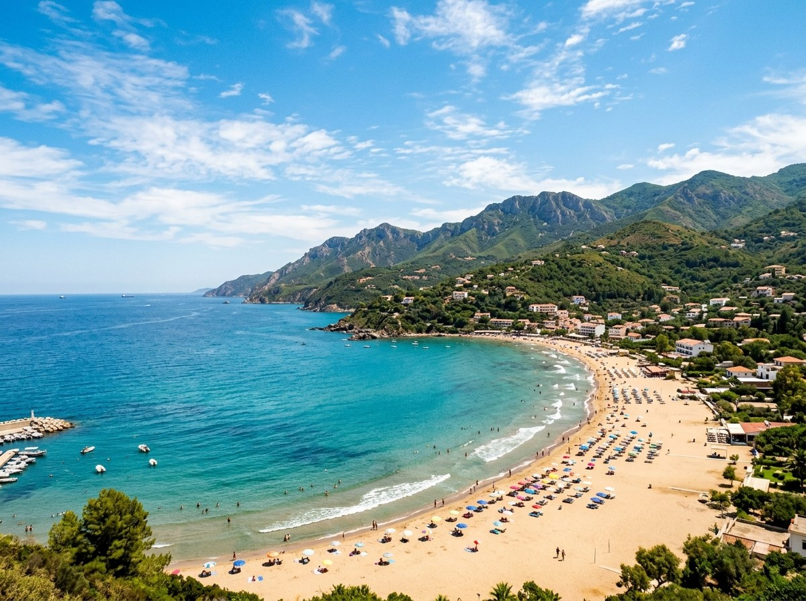
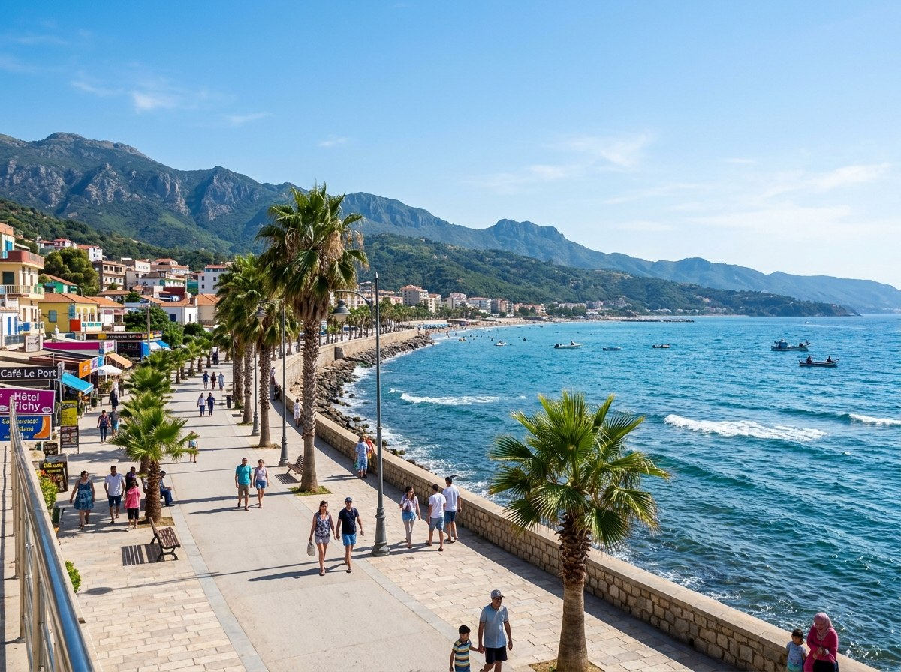
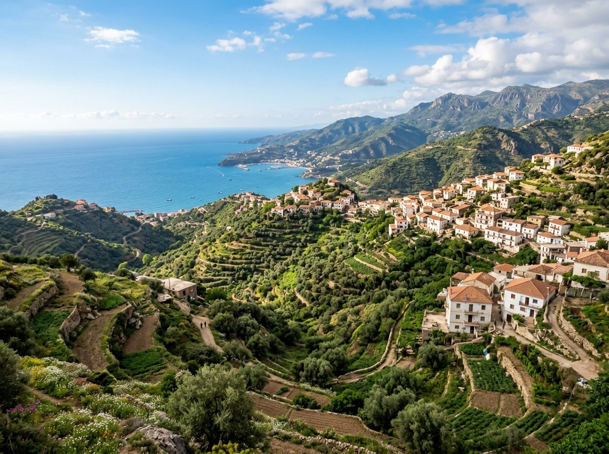

Notre programme pour les élections communales : des chantiers terminés, un budget lisible et une
commune qui écoute ses habitants, du littoral aux villages de montagne.
6 moisDiagnostic public de l'eau, des routes et de l'éclairage, village par
village.
12 moisCollecte des déchets régulière dans tous les quartiers et
villages.
24 moisChantiers en cours (réseaux, voiries) terminés avant tout nouveau
projet.
5 ansUn littoral vivant toute l'année, avec un bilan public chaque année.
Notre histoire
63 ans de combat pour la démocratie
Fondé le 29 septembre 1963, le Front des Forces Socialistes (FFS) mène depuis plus de six
décennies une lutte constante pour la souveraineté populaire, la justice sociale, les libertés publiques
et un État de droit démocratique et pluriel.
Mémoire & fidélitéHocine Aït Ahmed (1926–2015), fondateur du FFS
29 sept. 1963Création du FFS : Sous l'impulsion de Hocine Aït
Ahmed et de ses compagnons, le parti naît pour défendre la souveraineté populaire, le
pluralisme politique et s'opposer à la concentration du pouvoir au lendemain de
l'indépendance.
Avril 1980Printemps berbère : Engagement résolu aux côtés des
mobilisations démocratiques et identitaires pour la reconnaissance des droits culturels et
linguistiques (l'amazighité composante fondamentale de l'identité nationale).
Sept. 1985L'Alternative démocratique : Hocine Aït Ahmed réaffirme
la démarche de l'alternative démocratique comme voie incontournable pour sortir de
l'autoritarisme et rétablir la volonté populaire.
7 avril 1987Assassinat d'Ali Mecili : Figure historique et cadre
du parti assassiné à Paris. Sa mémoire demeure un phare de sacrifice et de fidélité pour la
démocratie et l'État de droit.
1988 – 1991Multipartisme et paix : Combats pour l'ouverture
démocratique, dénonciation de l'interruption du processus électoral et défense constante
d'une solution politique et pacifique.
1995Contrat national de Rome : Participation active aux démarches
favorisant le dialogue politique entre forces rejetant la violence, en vue d'une issue
pacifique à la crise nationale.
2014Conférence de consensus : Initiative majeure pour un consensus
national et un accord politique sur l'avenir du pays, la cohésion et les réformes
démocratiques et sociales.
23 déc. 2015Disparition de Hocine Aït Ahmed : Immense perte pour
le mouvement national. Ses écrits, ses principes et son éthique continuent d'orienter le
combat du parti.
2024Élection présidentielle : Candidature de Youcef Aouchiche
portant un projet d'État de droit démocratique et social, de diversification économique et
de concertation citoyenne.
2025 – Aujourd'hui63 ans de fidélité : Appel au pacte national
pour la souveraineté et les libertés, et engagement de terrain à Tichy pour une gestion
communale transparente, proche et participative.
Notre ville
Tichy, entre mer et montagne
Commune de la wilaya de Béjaïa, traversée par la RN9, Tichy associe une plaine côtière et un
relief de montagne. Ses plages font sa réputation, bien au-delà de la wilaya.
57 km²plaine côtière et montagne
16 546habitants au recensement 2008
≈ 15 kmde Béjaïa par la RN9
Vue panoramiquePanorama sur la baie et la commune de Tichy, entre mer et montagne
Littoral

Les plages de TichyPlaine côtière

Le front de mer et la plaine côtièreHauteurs

Les villages de montagne
Le constat
Ce qui doit changer
Des attentes simples, qui reviennent d'un quartier à l'autre.
L'eau et l'assainissement
L'accès à l'eau potable et le raccordement aux réseaux restent la première attente, surtout l'été
quand la fréquentation augmente.
Routes et circulation
La RN9 sature en saison, et les voiries de quartiers et de villages se dégradent faute
d'entretien suivi.
Propreté
Ramassage irrégulier, dépôts sauvages : l'image de la commune et la santé des habitants en
pâtissent.
Un littoral sous-exploité
Les plages attirent, mais la saison reste courte et les services (parkings, sanitaires, sécurité)
mal organisés.
Une jeunesse nombreuse
Les 20-29 ans forment la tranche d'âge la plus nombreuse de la commune (recensement 2008), avec
peu d'emplois et d'équipements.
Une administration lointaine
Démarches lentes, budget peu lisible : les habitants veulent savoir où va l'argent public.
Notre programme
Nos engagements pour Tichy
Neuf domaines de compétence communale, une même règle : finir, publier, rendre des comptes.
Chaque engagement a un délai et un indicateur de suivi public.
Notre méthode
Cinq règles pour tenir parole
Ce que nous nous imposons dès le premier jour du mandat.
Finir avant de commencer
Aucun nouveau chantier tant que les chantiers de même nature ne sont pas réceptionnés.
Un budget publié
Budget, marchés et avancement des travaux affichés et mis en ligne chaque trimestre.
Réunions de quartier
Une réunion publique par village et par quartier, chaque année, pour fixer les priorités.
Permanences des élus
Chaque élu reçoit les habitants à jour fixe, sans rendez-vous.
Bilan annuel
Un bilan public des engagements tenus, retardés ou abandonnés, avec les raisons.
L'équipe
Celles et ceux qui s'engagent
Des habitants de Tichy, de tous les villages et de tous les métiers.
Pour Tichy, votons pour l'engagement
L'engagement, la transparence, la crédibilité : votre vote est le levier de changement pacifique et
démocratique.